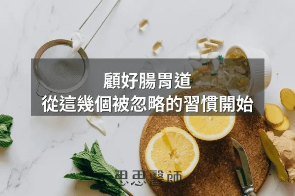
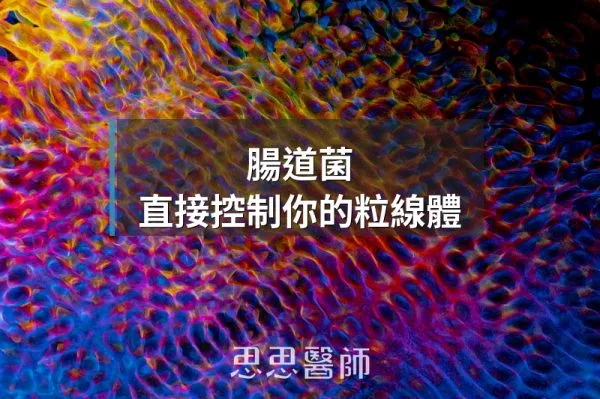
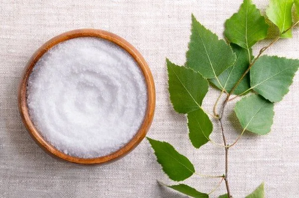
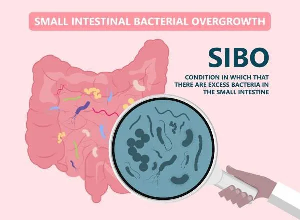
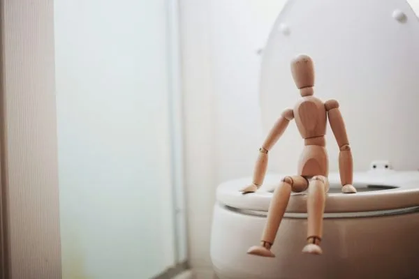
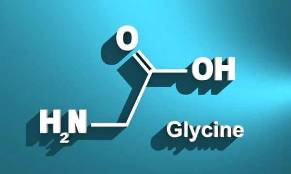
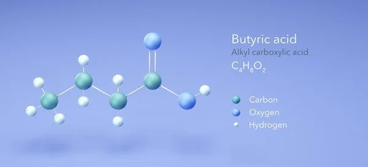
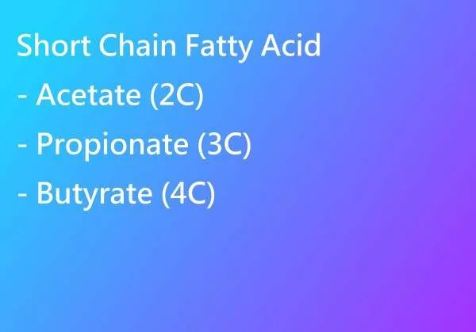
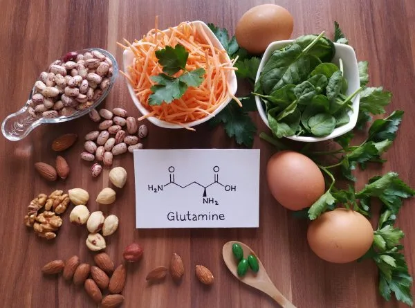

腸道菌的比例是健康的關鍵
2026-10-05
F:B 比值是 Firmicutes 與 Bacteroidetes 的比例，過高或過低各代表不同的腸道狀態，可從原型食物、多樣纖維、睡眠與壓力調整。

46 篇文章
F:B 比值是 Firmicutes 與 Bacteroidetes 的比例，過高或過低各代表不同的腸道狀態，可從原型食物、多樣纖維、睡眠與壓力調整。

植物中含有的抗營養素會阻礙營養吸收，素食者需了解並避開這些成分，才能維持健康的植物性飲食。

人工甜味劑、乳化劑、反式脂肪、色素等添加物改變腸菌組成、破壞腸道屏障，容易引發腸漏和慢性發炎，需從飲食移除這些干擾因子。

2012 年新加坡研究顯示特發性便祕患者停掉纖維後排便頻率改善，但這不代表纖維沒用，而是不是每個人都適合高纖。

腸胃保養常輸在進食習慣，如保留 12 小時不進食、專心吃飯、蒸煮、腹式呼吸，保健品只是加分，不能取代生活基本功。

超加工食品含有乳化劑與改性澱粉等添加物，會破壞食物基質、傷害腸道菌相，同時繞過飽足感訊號，導致過量進食。

木耳含有的多醣體和膳食纖維，透過改善腸道菌相、降低飯後血糖峰值，對胰島素阻抗和代謝健康有幫助。

腸漏症因緊密連結蛋白破壞增加腸道通透性，導致細菌內毒素進入血液，引發持續多年的全身發炎反應。

克菲爾與優格差異很大，克菲爾含 30 到 50 種以上微生物且有酵母菌，文獻顯示它對腸道菌多樣性與乳糖不耐可能更有幫助。

發酵食物加熱後活菌死亡，但其中的有機酸、細胞壁成分與生物活性胜肽仍留存，對腸道環境和免疫系統仍有作用。

史丹佛對哈扎人的研究顯示，腸道菌相要靠食物纖維與植物種類的多樣性維持，益生菌無法取代多樣的食物。

文中整理 Gundry《腦腸悖論》的觀點：腸道菌透過短鏈脂肪酸、血清素與內毒素影響粒線體，建議以多酚等飲食保護粒線體。

發酵乳製品中乳酸菌消耗Neu5Gc減少免疫發炎、分解A1casein危害和乳糖、產生維他命K2，陳年起司與新鮮乳製品代謝影響完全不同。

排毒管道包括膠淋巴系統深睡期清理類澱粉蛋白、汗液排重金屬和BPA、腸肝循環高效率排便，三者都無需補充品純靠生活方式運作。

益生菌通過胃酸到腸道的存活率僅20–40%，腸溶型可超過50%但普通膠囊低於1%，停止補充後2–7天內迅速消失，無特定症狀的健康人無須長期補充。

哈佛 2014 年研究讓受試者短期吃純動物性或純植物性飲食，發現腸道菌相隔天就明顯改變，停止後兩天內即恢復基線。

文中引述 Mark Hyman 的建議，每天多吃 10 到 20 克纖維可改善血糖控制與發炎，並提供加倍蔬菜量、纖維密度高食物等實用做法。

多酚是腸道好菌偏好的食物，發酵後產生短鏈脂肪酸、強化腸壁，文中建議從橄欖油、莓果、綠茶等日常食物攝取，並先把腸道環境養好。

Akkermansia muciniphila透過維護腸道屏障改善胰島素敏感度，但補充效果因原有菌量基礎而異。

Omega-7特別針對上皮細胞和皮脂腺，能修補皮膚和腸道黏膜的屏障損傷，改善皮膚保水能力。

腸腦透過荷爾蒙訊號、直接神經連結、微生物群、免疫介導四個高度整合的系統通訊，腸道失衡與發炎會直接影響大腦功能與行為。

洋車前子含豐富的阿拉伯木聚醣，每日攝取10至15克可使糖化血色素下降約0.97%，效果媲美某些口服降糖藥。

PM2.5 是奈米級載體，會把重金屬等毒素帶入血液並引發氧化壓力與慢性炎症，作者建議活化 Nrf2、補充 Omega-3，並在室內用 HEPA 濾網。

活性碳因龐大表面積能吸附毒素，短期搭配排毒策略時有幫助，但長期使用反而造成營養失衡，需與藥物間隔至少三小時使用。

纖維分為水溶性與非水溶性，前者延緩血糖上升並餵養腸道菌，後者增加糞便體積、促進蠕動，兩者都要攝取且並非越多越好。

一個抗生素療程使腸道多樣性下降25%且核心菌群崩潰，停藥6個月後仍只恢復63%物種豐度，留下的抗藥性疤痕會影響代謝彈性。

青花椰苗蘿蔔硫素含量遠高於成菜，能啟動Nrf2整條抗氧化路徑，調整腸道菌相並產生丁酸修復腸屏障，降低全身發炎。

青花椰苗的蘿蔔硫素促進益菌生長、激活Nrf2抗氧化通路、增加丁酸產生，修復腸屏障效果更勝整株花椰菜。

2023 年 Nutrients 研究發現職業足球員高強度訓練會使腸漏指標上升，每天吃 40 克黑巧克力一個月則讓指標幾乎不變。

腸道菌合成多種神經傳遞物質，八成訊息由腸道向大腦傳遞，抗發炎飲食和益生菌能改善焦慮和失眠。

腸道菌群產生的短鏈脂肪酸能促進GLP-1分泌與胰島素作用，透過增加纖維攝取與運動可改善胰島素阻抗。

康普茶含益生菌、抗氧化劑和乙酸，能促進腸道菌群平衡、減少自由基損傷、抗菌抗發炎，作為健康飲品補充選擇相對安全。

酥油是去除水分與乳清的純脂肪，較耐高溫、對乳糖或乳蛋白過敏者較安全，但與奶油的健康差異其實很小，LDL偏高者仍要適量。

木糖醇是天然代糖且刺激胰島素效率約為蔗糖30至50%，對口腔與腸道健康有益但過量會引發副作用。

小腸細菌過度生長導致多種症狀，減少纖維和高糖飲食、間歇性斷食、補充麩醯胺酸等營養素可有助改善狀況。

抗性澱粉經冷藏後的澱粉結構改變會降低升糖指數，對血糖影響因人而異，宜用連續血糖監測儀評估個人反應。

抗生素可破壞多達30%的腸道細菌且影響可持續數年，多樣化植物攝取與發酵食品能維持菌群健康。

便秘分為原發性和次發性，原發性由腸道神經功能障礙或心理壓力引起，次發性與多種疾病和藥物相關。

咖啡綠原酸具抗氧化特性，每天喝一至三杯可維持端粒長度減緩老化，但過量攝取會升高血壓，建議日咖啡因限300毫克。

鳳梨發酵飲料提帕切含有益生菌和低度酒精成分，可在室溫下發酵三至五天製成，非常適合家庭釀造。

約70%免疫細胞位於腸道，腸道菌叢失衡導致慢性發炎，補充十字花科植物、莓類、堅果等高纖維食物能強化免疫力。
保養腸胃道應在清晨補充電解質、用蒸煮代替炒炸、進食時專注進食、每日至少12小時不進食、練習腹式呼吸並避免非必要服用抗生素。

甘胺酸佔人體蛋白質11.5%，是合成膠原蛋白、穀胱甘肽和肌酸的重要成分，能保護腸壁、降低體溫幫助睡眠，建議每日補充1000毫克。

丁酸是短鏈脂肪酸，由腸道菌發酵膳食纖維產生，具有抗發炎和促進腸道健康的作用，透過攝取高纖維食物比直接補充丁酸更能有效促進其生成。

短鏈脂肪酸由腸內菌發酵纖維製造，能改善胰島素阻抗、腸漏症與大腦健康，應通過飲食纖維增加而非口服補充。

麩醯胺酸是黏膜細胞主要營養來源，化療或開刀後補充能促進修復，食物中含量充足無需額外補充。